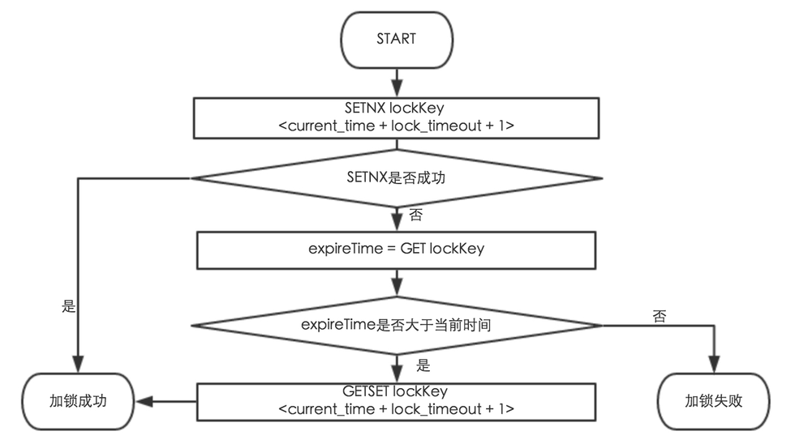
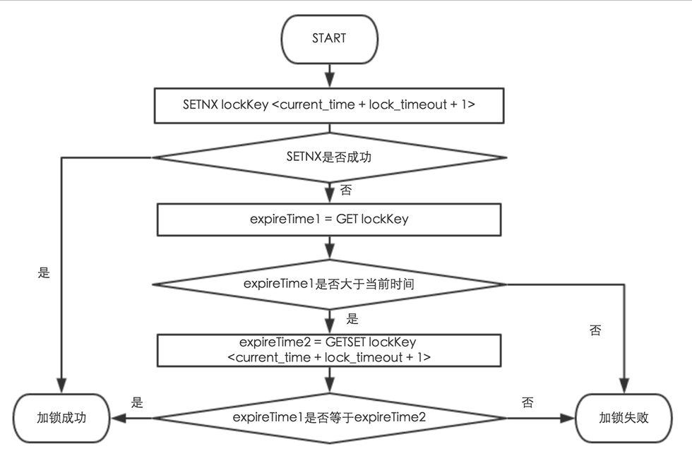
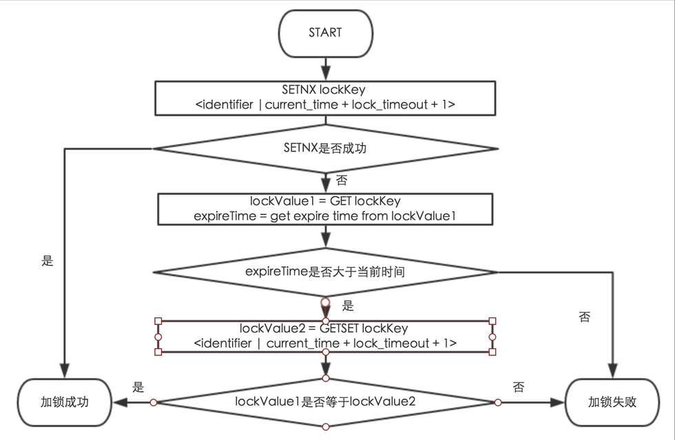

基于缓存实现分布式锁
基于缓存实现分布式锁
PART1 实现一个不可重入的，非阻塞的锁
基于缓存的锁主要有基于SETNX和基于INCR两种实现，其中基于SETNX是主流的方式。
基于SETNX的方案
【方案A】一个基于SETNX的简单实现
Acquire Lock： SETNX lockKey someValue(可以是一个固定的字符串，比如”locked”)
Release Lock： DEL lockKey
方案A存在的问题：
【问题1】锁不释放
如果加锁线程挂了或者解锁失败，那么锁将一直不释放。
为了解决问题1，只要在加锁时设置锁的有效期即可。
锁过期的实现机制主要有两种：
方式1：利用缓存的自动失效机制
方式2：在lockValue手动设置过期时间
对于方式1，需要考虑缓存过期的时间精度问题。
NKV缓存过期时间是以秒为单位。Redis在2.6之前过期时间精度也是1S以内， 从2.6开始缓存过期时间控制在1MS以内。
Redis官方文档中描述如下：In Redis 2.4 the expire might not be pin-point accurate, and it could be between zero to one seconds out. Since Redis 2.6 the expire error is from 0 to 1 milliseconds.
下面两个方案中，方案B1使用方式1，方案B2使用方式2。
【方案B1】利用缓存的自动失效机制
Acquire Lock：
SETNX lockKey someValue expire
Release Lock：
DEL lockKey
【方案B2】手动在lockValue加入过期时间
Acquire Lock:

Release Lock:
DEL lockKey
首先分析方案B2。
方案B2存在两个问题：
a）由客户端设置锁的过期时间，存在不同客户端上的时间不一致的问题。
b）由于方案B2把超时时间设置为value，客户端尝试获取锁时需要先尝试获取当前的lockValue，再执行后续操作，存在竞态条件，可能导致锁被误删除进而导致多个线程同时获得锁。
step1： 线程1和线程2检查，都发现锁已经超时。
step2： 线程1删除锁，并且调用setnx设置锁值。
step3： 线程2删除锁，并且调用setnx设置锁值，结果线程1和线程2都获取了锁。
方案B2的一个改进实现：
【方案B2-1】
Acquire lock:

Release lock：
DEL lockKey
方案B2-1 存在一个问题：在没有成功获取锁的情况下还是会通过GETSET更新其他线程持有的锁的超时时间。一般情况下这个细微的误差是可以接受的。
方案B2-1 引入了一个新问题：
【问题2】 锁被误删
step1 线程1获得了锁，并且执行时间超过了锁的有效期。
step2 锁过期，线程2获得锁。
step3 线程1执行完毕，释放锁，此时锁已经被线程2持有。结果线程1把线程2持有的锁给释放了。
为了解决问题2，基于方案B2-1，提出改进：
【方案B2-2】:
Acquire lock：
同方案B2-1
Release lock：
获得当前锁的超时时间，如果和本地设置的超时时间是一致的，删除锁。否则认为锁已经被其他线程获取，不执行删除锁的操作。
方案B2-2的目的是解决误删其他线程锁的问题，但是由于在竞态条件下，当前线程设置的锁过期时间是有可能被其他线程改写的，虽然当前线程仍然持有锁，但是尝试释放锁时发现锁未过期并且锁的过期时间和本地的过期时间不一致，就不会释放锁了，其他线程会一直等待锁失效才行，在高并发环境下是低效的。
为了避免方案B2-2的问题，基于方案B2-1，重新提出方案B2-3
Acquire Lock：

Release Lock：
获得lockValue，比较lockValue中的identifier和本地线程identifier，如果相等则删除缓存，否则不执行任何操作。
方案2-3 仍然存在的问题
1、不同客户端的时间可能不一致的问题
2、GETSET获取锁失败时 仍然更新了其他线程持有的锁的过期时间
3、删除锁时先check再del 存在竞态条件 可能检查时发现锁是被当前线程持有的，在检查之后删除之前，锁过期并且被其他线程持有，最后删除锁结果把其他线程持有的锁删除了
4、NKV不支持GETSET操作，如果基于NKV实现，方案2-3实现不了。
接下来分析方案B1。
redis 2.6 之前，设置缓存的值和设置expire两步操作是分开的。如果设置缓存成功了而设置expire失败了，就会导致锁一直不失效，没有线程能够获得锁。redis2.6之后，提供了同时设置缓存的值和过期时间的方法，保证了原子性。
方案B1 同样存在上述的问题2。
为了解决问题2，提出方案B1-1
【方案B1-1】：
Acquire Lock：
SETNX lockKey identifier SET EXPIRE for lockKey
Release Lock：
检查锁是否被当前线程所持有，只有当前线程持有锁的情况下才释放锁。这里的identifier用来做加锁线程的唯一标识符，可以使用UUID或者使用机器名+线程名 只要能够唯一表示相同机器及不同机器上的加锁线程即可。
方案B1-1存在的问题：
1、setnx和set expire是两个操作，如果setnx成功但是set expire失败就会导致锁一直不释放。
从redis 2.6 开始支持set value的同时set expire 避免了这个问题。
2、NKV缓存过期时间精度是1S，在某些业务场景上可能不合适。
2、B1-1同样存在竞态条件
【问题3】
step1 线程1检查锁是否被当前线程锁持有，发现锁是被当前线程所持有的。
step2 在线程1执行释放锁操作之前，线程1的持有的锁过期，线程2获得了锁
step3 线程1执行删除锁操作，把线程2持有的锁误删除
由于检查锁是否被当前线程所持有与释放锁这两个操作不是原子操作，可能存在竞态条件。
那么有什么方法可以保证cas(check and set)原子性呢？
如果是基于redis单机实现的锁，因为redis 可以通过multi/exec、watch/unwatch等机制可以实现操作的原子性，所以问题3可以得到解决。
实际应用中，由于NCR基于redis集群，目前没有提供对事务和原子操作的支持，所以也实现不了cas操作的原子性。
如果是基于NKV实现的锁，因为NKV没有提供对操作原子性的支持，所以也实现不了cas操作的原子性。
基于incr的实现方案
Acquire Lock：
INCR lockKey 如果返回1表示获取锁成功 再执行EXPIRE LockKey 设置超时时间
Release Lock：
DEL lockKey
由于INCR和EXPIRE操作不是原子操作 如果INCR成功，但是expire失败会导致锁一直不释放。
同时incr的实现方式也无法解决锁被误删除的问题。
总结
方案2-3和方案1-1都是基于缓存实现不可重入非阻塞锁时可以考虑的方案。
方案2-3需要考虑不同客户端的时间不一致问题，如果基于NKV需要考虑GETSET操作不支持的问题。
方案1-1如果基于NKV需要考虑过期时间精度的问题。
两种方案目前都解决不了删除锁时的原子操作问题。